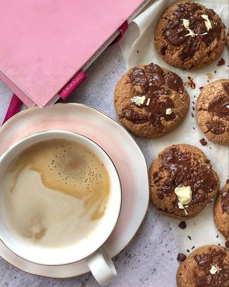

Moja beleška
SačuvanoSastojci
Priprema
•2 reda bele belgijske cokolade •••Umutite jaja sa secerom, u to dodate potpuno omeksali maslac i sve ostale sastojke prethodno sjedinjene izuzev crne i bele cokolade. Njih iseckajte na kockice. Smesu rucno zamesite, pa po potrebi dodajte jos malo brasna kako se ne bi lepilo za ruke. Na dlanu formirajte loptice, koje cete potisnuti celom povrsinom i na svaki keksic dodajte seckanu crnu cokoladu. Rernu prethodno zagrejte na 180C, pa keksice ubacite na svega 10-12 min. Prilikom vadjenja povrsina kolacica treba da ostane mekana, a dno da uhvati zlackasta boja. Tada znate da su spremni. Na jos vrele dodajte po koju kockicu bele cokolade, pa ih ostavite na plehu da se prohlade. Hladjenjem ce se steci i biti savrseni. Zamislite vec sad da vam kuca zamirise na cokoladu i lesnik 🥰🥰🥰 Inace, prohladjene ih mozete drzati u zatvorenoj staklenoj posudi i sladiti se uz kafu i narednih par dana 💁🏼♀️
Originalni opis sa Instagrama
𝗣𝘂𝘁𝗲𝗿 𝗸𝗲𝗸𝘀𝗶𝗰𝗶 𝘀𝗮 𝗰𝗼𝗸𝗼𝗹𝗮𝗱𝗼𝗺 𝗶 𝗹𝗲𝘀𝗻𝗶𝗰𝗶𝗺𝗮🌸 Dan zapocet soljicom omiljene kafe a uz to i savrsen keksic 💫 #treatyoself ••• Od sastojaka vam je potrebno: •125 gr putera sobne temperature •125 gr secera •2 jaja •250 gr mekog brasna tip 400 •pola kasicice sode bikarbone •pola kasicice pzp •100 gr mlevenih pecenih lesnika •100 gr cokolade u prahu •100 gr kvalitetne crne cokolade (70%kakao delova) •2 reda bele belgijske cokolade •••Umutite jaja sa secerom, u to dodate potpuno omeksali maslac i sve ostale sastojke prethodno sjedinjene izuzev crne i bele cokolade. Njih iseckajte na kockice. Smesu rucno zamesite, pa po potrebi dodajte jos malo brasna kako se ne bi lepilo za ruke. Na dlanu formirajte loptice, koje cete potisnuti celom povrsinom i na svaki keksic dodajte seckanu crnu cokoladu. Rernu prethodno zagrejte na 180C, pa keksice ubacite na svega 10-12 min. Prilikom vadjenja povrsina kolacica treba da ostane mekana, a dno da uhvati zlackasta boja. Tada znate da su spremni. Na jos vrele dodajte po koju kockicu bele cokolade, pa ih ostavite na plehu da se prohlade. Hladjenjem ce se steci i biti savrseni. Zamislite vec sad da vam kuca zamirise na cokoladu i lesnik 🥰🥰🥰 Inace, prohladjene ih mozete drzati u zatvorenoj staklenoj posudi i sladiti se uz kafu i narednih par dana 💁🏼♀️ • • • #cookies #cookiesofinstagram #cookieandcoffee #perfectmorning #treatyoself #enjoythelittlethings #enjoymoments #homemade #homesweethome